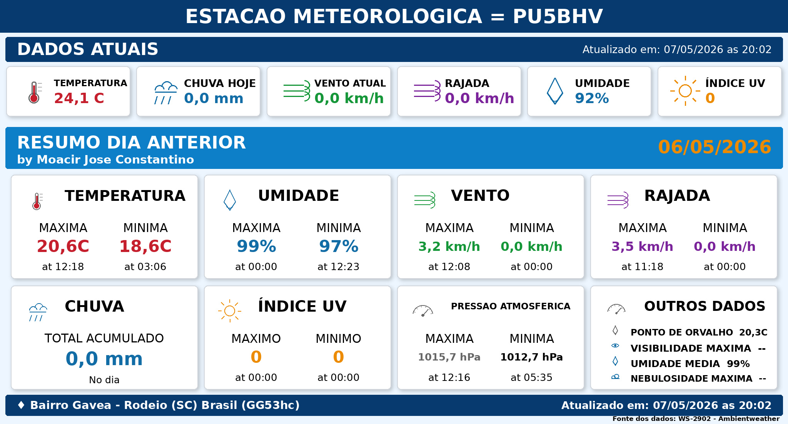

Estação Meteorológica PU5BHV
Ao clicar em compartilhar, o texto abaixo será copiado e o Facebook será aberto.

Aperte Control+V para colar o texto no Facebook
Ao clicar em compartilhar, o texto abaixo será copiado e o Facebook será aberto.
